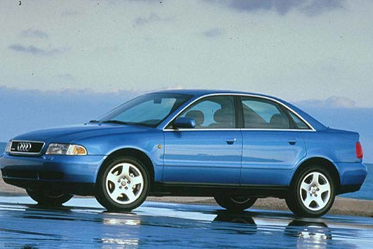
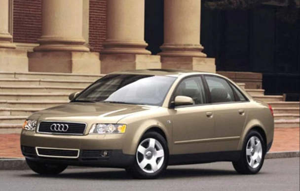

Немецкий автопроизводитель Audi известен многими своими моделями, но в его коллекции есть такие экземпляры, которые берут свое начало еще в далеких 70-х годах прошлого века.
Одной из таких моделей является Audi A4. Этот компактный автомобиль пришел на смену Audi 80, которая сходила с конвейера с 1972 года. Ее "жизнь" остановилось в 1994 году. Тогда, собственно, и появилась на свет Audi A4.
ТСН.Авто рассказывает об этом компактном семейном автомобиле. Мы расскажем о главных особенностях Audi A4, ее преимуществах и недостатках, а также о том, кто именно является соперником на рынке.
ИСТОРИЯ И ХАРАКТЕРИСТИКИ АВТОМОБИЛЯ
Итак, начнем с того, что Audi A4 — это пятиместный автомобиль компактного класса, который представлен в кузовах седан и универсал. Первое поколение Audi A4 продолжает традиции предыдущих четырех поколений Audi 80, и так же, как и у ее предшественницы конструкция автомобиля состоит из продольно-ориентированного двигателя в передней части автомобиля и встроенной в задней части двигателя трансмиссии, опять же продольно-ориентированной.
С начала выпуска, Audi A4 была доступна в четырех поколениях, основанных на серии автомобильных платформ "B" концерна Volkswagen Group, в основном известных по своим кодам: начальный — B5, следующие B6, B7, B8 и нынешний — B9.
ПЕРВОЕ ПОКОЛЕНИЕ
Оно с небольшими изменениями выпускалось до 2001 года. Сначала была доступна только версия седан, версия универсал (Avant) появилась годом позже. Автомобиль базировался на той же платформе, что и Volkswagen Passat пятого поколения. В габаритах и внутренних размерах A4 практически не отличается от Audi 80. Новая модель стала только шире, что помогало курсовой устойчивости. Внутреннее пространство также изменилось, хотя несколько механических элементов, например выключатель оконной ручки или панель управления климат-контролем напоминают Audi 80. Можно отметить замечательную обзорность и одновременно соблюдение самых высоких требований пассивной безопасности автомобиля. Центральные стойки хорошо держат боковой удар (с октября 1996 все модели в стандартной комплектации оснащаются кроме передних, двумя боковыми, по одной с каждой стороны, подушками безопасности).
Первая Audi A4 базировалась на обновленной платформе B5 (PL45). Позже она также стала основой для Audi A6 C5 и почти конструктивно идентичному VW Passat B5 (тип 3B). Различия между VW Passat и Audi A4 были преимущественно в кузове и оформлении внутреннего пространства. VW Passat предлагал гораздо больше места, чем Audi A4. Двигатели, трансмиссия а также полноприводная система Audi quattro также применялась на VW Passat. Двигатель на Audi расположен продольно. На нее впервые стали устанавливать автомат Tiptronic, основой для которого стал автомат, разработанный Porsche для их модели 911. Она позволяет водителю сделать выбор: или коробка работает в полностью автоматическом режиме, либо передачи он переключает сам.
ВТОРОЕ ПОКОЛЕНИЕ
Серийный выпуск начался с 2001 года. Оно базировалось на новой платформе Volkswagen B6. Второе поколение стало выпускаться также в кузове типа кабриолет (Cabriolet). Дизайн был выполнен в стиле второго поколения Audi A6.
Кузов Audi А4 второго поколения стал просторнее по сравнению со своим предшественником: по длине — на 69 мм (4 547 мм), ширина — на 33 мм (1 766 мм), а по высоте — на 13 мм. Кроме того, автомобиль оснастили полным набором средств безопасности. Основу безопасности пассажиров составляют прочная секция салона с определенными характеристиками деформирования, подушки безопасности водителя и переднего пассажира, а также боковые головные подушки безопасности Sideguard и механизм натяжения ремня для передних сидений. Серийно устанавливается электронная система стабилизации курсовой устойчивости, а также усилитель экстренного торможения.
Бензиновые двигатели — рядные четырехцилиндровые, V-образные шестицилиндровые (восьмицилиндровые на моделях S4) с электронным управлением. Дизельные двигатели — рядные четырехцилиндровые, V-образные шестицилиндровые. Все двигатели Ауди А4 с жидкостным охлаждением, расположенные продольно. Выпускаются модели с передним или полным приводом "Quattro". В зависимости от комплектации устанавливается полностью синхронизированная 5- или 6-ступенчатая МКПП или АО (Tiptronic с динамической программой переключения DSP или Multitronic с динамической программой регулирования DPR).
ПРЕИМУЩЕСТВА AUDI A4
- - дизайн;
- - имидж;
- - уровень безопасности;
- - шумоизоляцию;
- - надежность и мощность двигателя;
НЕДОСТАТКИ AUDI A4
- - размер салона;
- - дорожный просвет;
- - проходимость;
- - расход топлива;
- - запчасти и обслуживание.
КОНКУРЕНТЫ
- - BMW 3-Series;
- - Volvo S60;
- - Lexus IS;
- - Alfa Romeo 155, 156, 159;
- - Infiniti Q50;